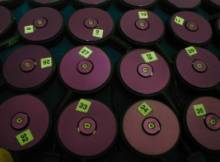
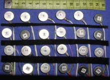
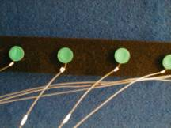

|  |  |  |
|
In our research projects over the years we have used several types of tactors…such as the electromechanical vibrators (close up, shown on the left), manufactured by Engineering Acoustics, Inc. (www.eaiinfo.com) and small pager-motor tactors (center), commercially available from sources such as Marlin P Jones (www.mpja.com) or Jameco (www.jameco.com). Steadfast Technologies also sells enclosed, wired versions of two types of pager motors, including the "pancake" type in the middle array, as their R1 and R2 Rototactors. We have also used pneumatic actuators (right), manufactured by Steadfast Industries. Each type has its own advantages and disadvantages. The electromechanical tactors have a relatively broad frequency range, a large intensitive range (allowing them to be used on virtually any body site that we have tested), but are somewhat expensive at this time (c. $200 $US as of 7/1/03). The unmodified pager motor tactors are quite strong and very inexpensive (c. $3.00 $US), but their frequency (rate of rotation) and intensity are inherently linked and very limited. The pneumatic tactors from Steadfast are also quite inexpensive (c. $5.00 US$) but require a pulsed air source for their driving stimulus. There are also limitations on tubing length/ diameter, but they are extraordinarily light, and strong enough for abdominal use. As of summer 2004 we have not been able to make contact with Steadfast to confirm current availability. We are working towards a page that will provide comparisons among these, manufacturer links, and close up pictures of the tactors. |

Return to Tactile Research Laboratory Home Page